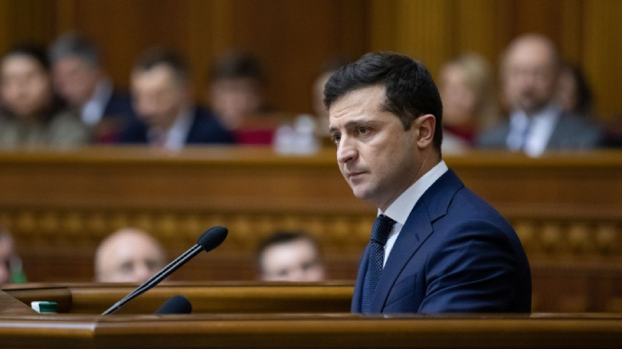

Політика
Економіка
Життя
Європа
Форум
Блоги
Історична правда
ТаблоID
Доступ
Доступ
Усі розділи
Українська правда
Заснована Георгієм Гонгадзе у 2000 році
укр/рус
Клуб УП
Головна
Новини
Публікації
Колонки
Інтерв'ю
Графіка
Фото/Відео
Блоги
Подкасти
Архів
COVID-19 в Україні
Підтверджені:
348924
+5426
Активні:
199923
+4324
Вилікувалось:
142537
+1029
Померло:
6464
+73
Всього проведено
3053927
тестів. Дані МОЗ України. Оновлення: 26.10.2020 08:47
Дивіться на карті
Битва за мандат: відрив Гунька від Ляшка росте, ще 3% забрали "тезки"
В одномандатному виборчому окрузі №208 у Бахмачі за результатом обробки 83,91% протоколів кандидат у народні депутати від "Слуги народу" Анатолій Гунько збільшує відрив від лідера "Радикальної партії" Олега Ляшка.
В ЄС вважають рішення КС підставою для призупинення безвізу
КС заблокував вступ на посади переможців місцевих виборів – НАЗК
Через скандальне рішення КС Зеленський терміново скликає РНБО
Посли G7 відреагували на рішення КС: Україна не повинна повертатися в минуле
Кабмін призначив нового керівника Державної митної служби

Вільна економічна зона на Донбасі допоможе завершити війну – Зеленський
Зеленський про Кернеса та інших мерів: Через них загинула велика кількість людей
"Динамо" Київ може збанкрутувати через борг перед "Приватбанком" – ЗМІ
У керівництві ОП найбільше заробляє призначений ще Порошенком “фахівець з реформ”
Вона унікальна: Зеленський розповів про українську вакцину від COVID-19
Битва за столицю. Що обіцяють у програмах кандидати в мери Києва
Політика - Віта Думанська, Ірина Латиш